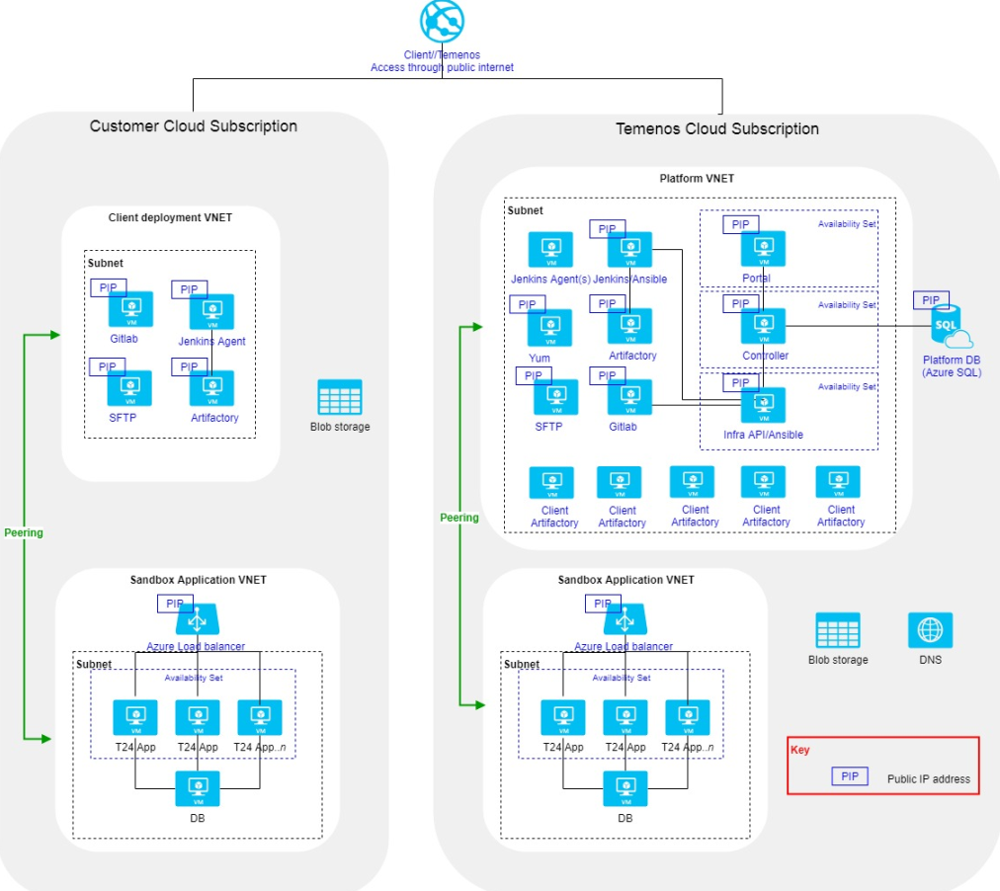

Welcome to Temenos Continuous Deployment
Temenos Continuous Deployment is an offering that provides individuals and teams with the ability to manage and configure their own instances of Temenos applications and approved 3rd party Plug & Play applications from the Temenos ecosystem.
 Benefits
Benefits
Start development and testing in minutes, not weeks.
Immediate environment provisioning can acceleration all your projects.
Simple to reproduce identical environments from templates.
A subscription service that means you don't need to buy and manage expensive hardware.
Self-service environment provisioning that is able to provide your teams with autonomy or centralised control.
Bring together configuration and local developments, with published versions of Temenos software and run through automated regression testing.
Triage results for continuous development.
Expert managed services provide full mission-critical service delivery leaving you to focus on your customers.
 Services
Services
Extend
The Extend module of the Temenos Continuous Deployment Paltform is used by the ‘change the bank’ teams for self-service management of Environments and provides access to the tools for enhancing Temenos solutions. The Extend module is an online software portal, which enables authorised Extends to provision Environments from a list of Templates. These Environments are for non-production use during development, test, integration, implementation, phases and ongoing changes to the Products. Self service provisioning of Environments, within minutes rather than weeks, can help accelerate development and ongoing change. Temenos is able to create production like Templates for any of the Temenos Product Suites (Retail, Corporate, Wealth, Micro-Finance, and Islamic Banking). This production like Environments enable the Client to develop and test more realistically at proof of concept, demonstrate more representative enhancements across their teams, and perform more life-like scenarios within training. The speed, reliability, and agility of these Environments will instantly add value to Client’s implementation of Temenos Products and scale your project delivery capacity.
Service Definition - Find out more here.
Assemble
The Assemble module of TCD is used during the continuous integration (“CI”) and continuous delivery (“CD”) of Temenos solutions. The Assemble module can accelerate the pace of change and increase confidence in the software deliveries by managing the Assemble of Components (updates, main release, Level 3 developments), the provisioning into testing Environments, the execution of tests scripts, and providing detailed dashboards of the results. This Assemble module further allows the Client to configure Products and Releases which match their own specific needs. The main objective being to streamline ongoing change and accelerate implementation / upgrade projects.
Service definition - Find out more here.
 Technical Overview
Technical Overview
This section shows the current state deployment architecture of the TCD platform.
The deployment allows for some organisations to be hosted within the Temenos SaaS and others to be hosted on the Customer's Azure subscription.
 Figure : Deployment View
Each component within the current state architecture is exposed over public internet with a public IP address (PIP).
Firewalls are embedded into the Virtual Machines.
Each Azure resource as per the diagram above has its own basic Network Security Group NSG rules implemented.
There are 2 installations of the Configuration Management software (Ansible), each piggy-backed onto another VM. Jenkins is used for both internal CI purposes and for building sandboxes.
Command Line Access
Command line access to the Sandbox Virtual Machines is restricted to Temenos employees only. Access is granted to users who have a SSH key which is shared amongst Temenos employees who need Command Line access.
Development and Release Process
The practice of Continuous Integration is currently followed, with developers of the TCD platform checking features into 'feature branches' frequently, and automated builds/tests being executed by the CI server (Jenkins) to verify fundamental sanity checks of the changes.
The TCD source code branching method includes the concept of a 'master' branch, which means all development is performed on feature branches, and changes are only ever merged onto the master. This means that the master branch is always production ready. The precise 'release to production' process is currently being aligned across the core components (Infra Module, Controller, Portal), and varies on a per-component basis, however the majority of change migration is performed using a standardised CI pipeline (on Jenkins) in the form of a push-button migration.
Changes are only migrated to production following certain quality check procedures; including code review, functional test and documentation where applicable.
Patching and Upgrades Process
Patching and upgrades of software/libraries used by the TCD platform is currently performed on an ad-hoc basis depending on criticality and feature requirements.
Get started with TCD and check our user guides, tutorials and more information about the platform.